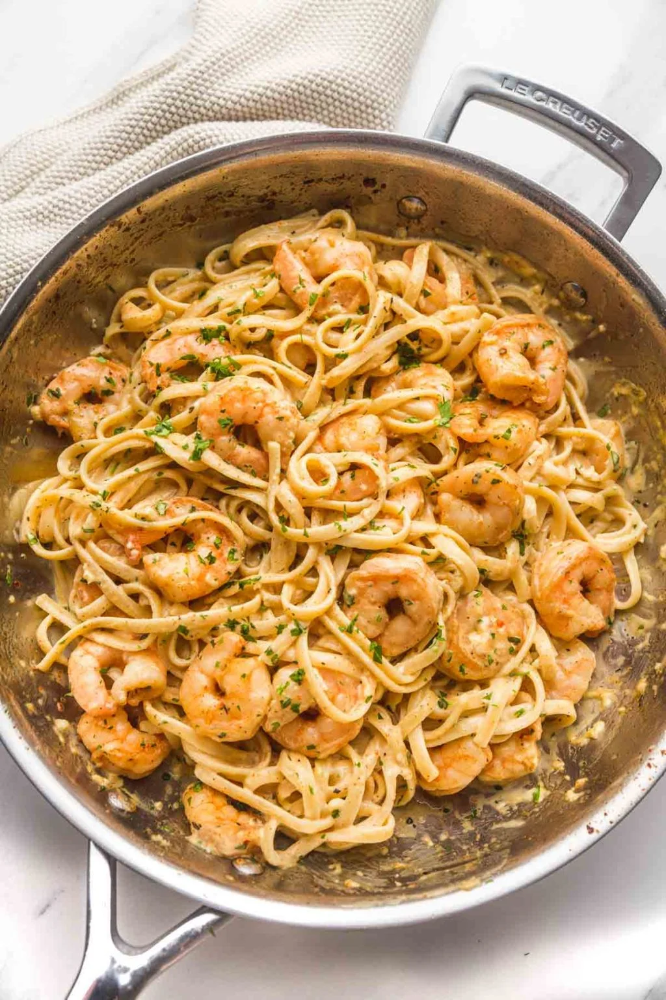
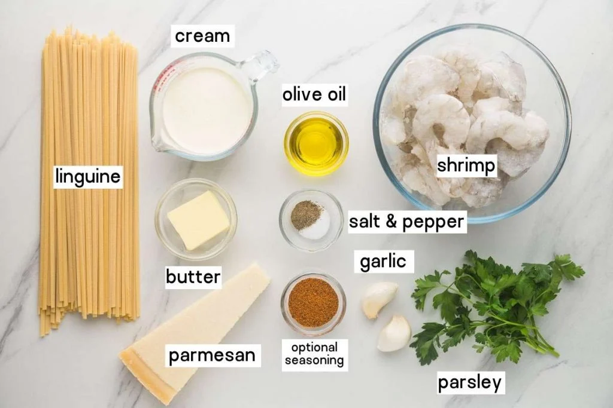
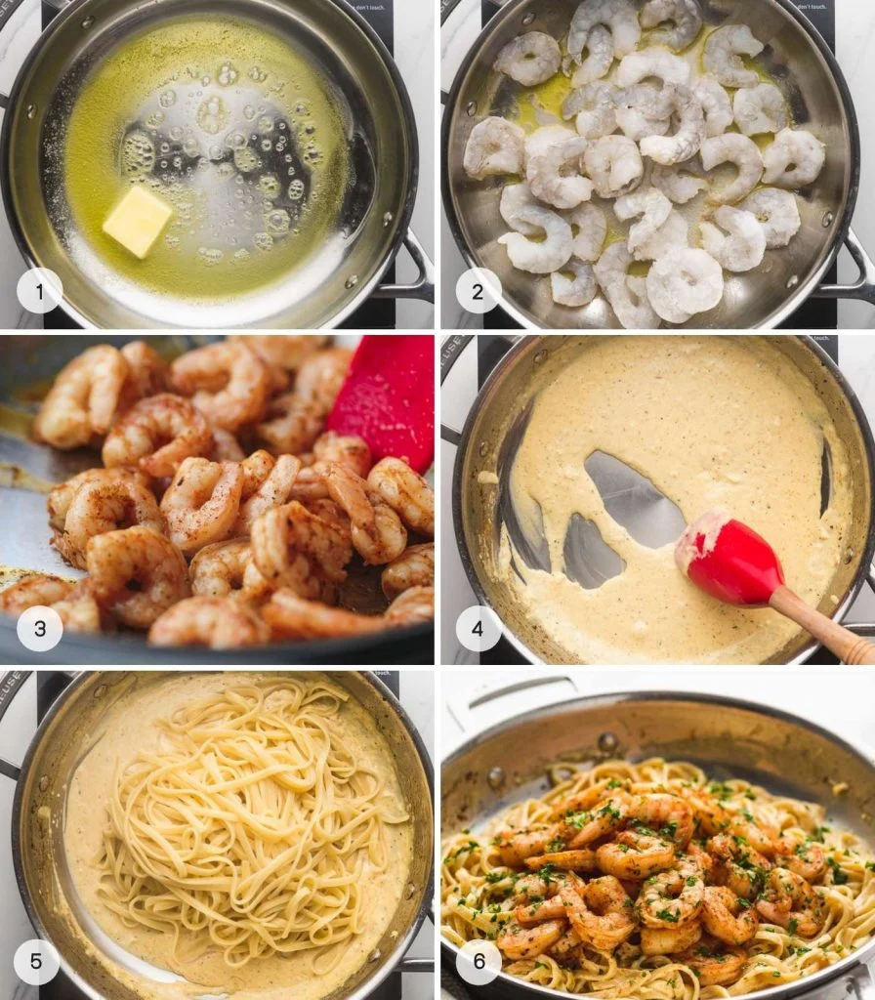

Creamy Garlic Shrimp Pasta

Ingredients

For the pasta
- 8 oz (about 225g) of your favorite pasta (spaghetti, fettuccine, or linguine work well)
- Salt, for pasta water
For the shrimp and sauce
- 1 lb (450g) large shrimp, peeled and deveined
- 2 tbsp olive oil
- 1 tbsp butter
- 6 cloves garlic, minced
- 1/2 tsp red pepper flakes (optional, for heat)
- 1 cup heavy cream
- 1/2 cup grated Parmesan cheese
- 1/4 cup chicken broth (or white wine for more flavor)
- Salt and pepper to taste
- 2 tbsp fresh parsley, chopped (for garnish)
- Zest of 1 lemon (optional, for extra freshness)
Steps
- Boil pasta in salted water according to package instructions. Drain, reserving 1/2 cup of pasta water.
- Saute shrimp in olive oil and butter for 2-3 minutes until pink. Remove shrimp and set aside.
- . In the same skillet, cook minced garlic for 30 seconds. Add chicken broth (or wine), heavy cream, and Parmesan. Simmer for 2-3 minutes.
- Add cooked pasta to the sauce, toss to coat. Return shrimp to the pan and mix.
- Garnish with parsley and lemon zest, then serve.

Nutrition Facts
| Nutrient |
Amount per Serving |
| Calories |
550-600 kcal |
| Protein |
30g |
| Fat |
30g |